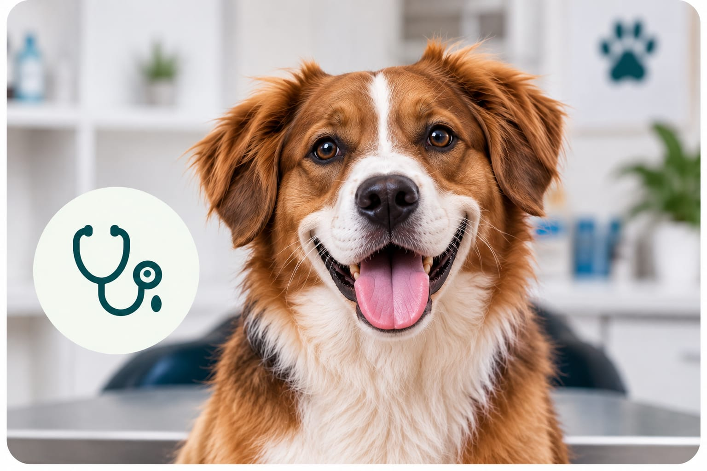
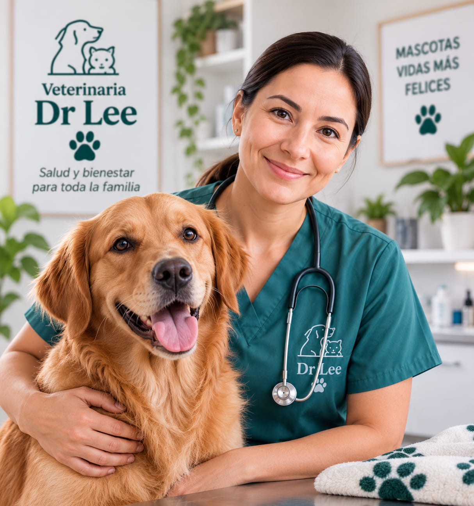
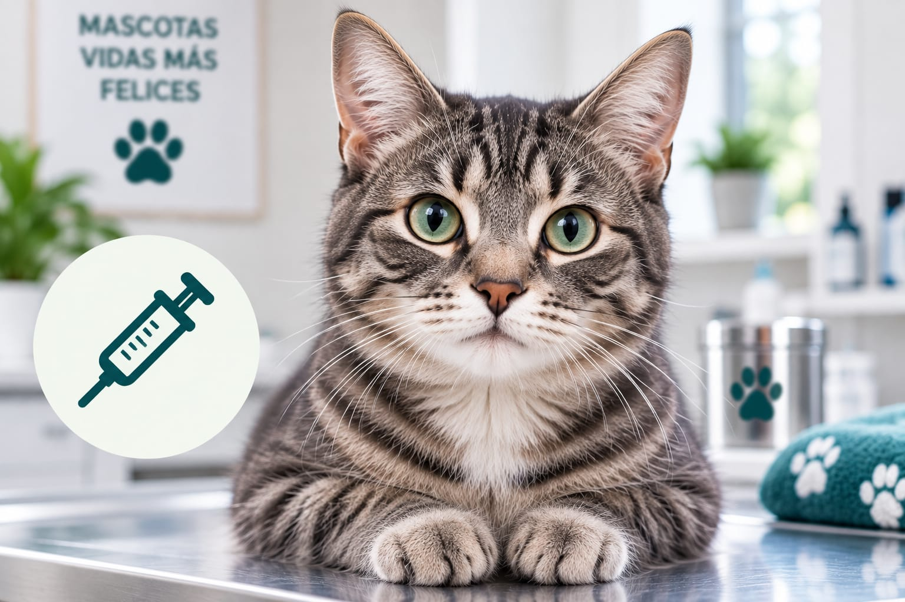
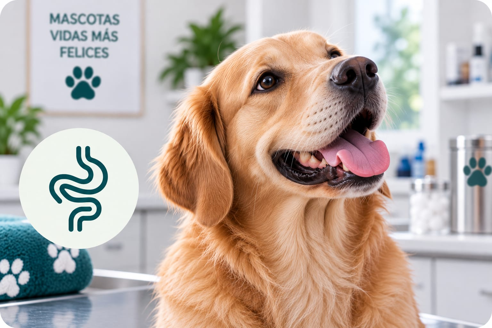
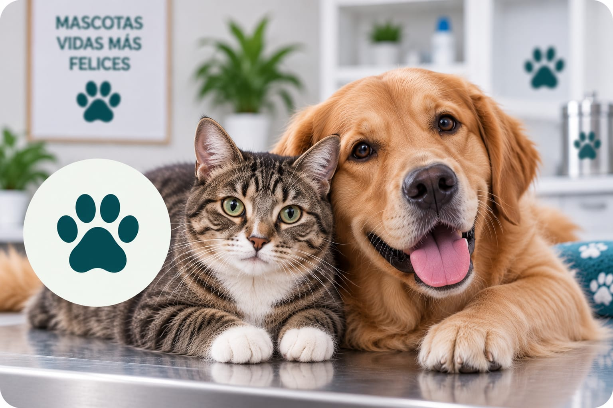
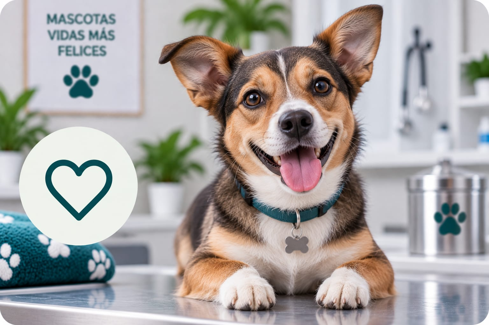

🩺Consulta veterinaria
Evaluación general, diagnóstico, seguimiento y orientación para el cuidado de tu mascota.
Agendar citaPara cada etapa de su vida
Atención integral para perros, gatos y otras mascotas, con enfoque en prevención, salud y bienestar.


Veterinaria y fundadora de Veterinaria Dr Lee
La Dra. Laura Lee creó Veterinaria Dr Lee con el propósito de ofrecer una atención cercana y profesional a las familias de Esparza. Su enfoque combina la atención clínica con la prevención, buscando que cada mascota reciba los cuidados necesarios para disfrutar de una vida saludable y acompañar a su familia durante muchos años.
Para ella, una buena atención veterinaria comienza escuchando a quienes mejor conocen a cada mascota: sus familias.

🩺Evaluación general, diagnóstico, seguimiento y orientación para el cuidado de tu mascota.
Agendar cita
💉Protección preventiva para ayudar a mantener a tu mascota sana en todas las etapas de su vida.
Agendar cita
🪱Prevención y control de parásitos internos y externos para una vida más saludable.
Agendar cita
🐾Una decisión responsable que puede contribuir al bienestar, la salud y el control de la población de mascotas.
Agendar cita
♥Controles periódicos, orientación nutricional y recomendaciones para acompañar la salud de tu mascota a lo largo de su vida.
Agendar citaSolicitá una cita con Veterinaria Dr Lee.
 Milo
Milo